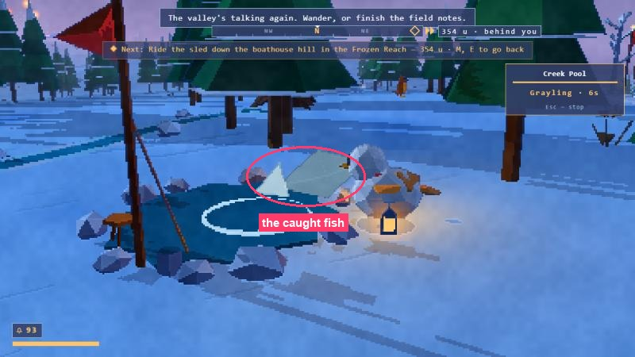
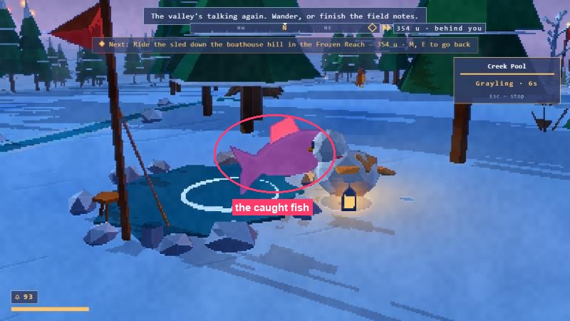
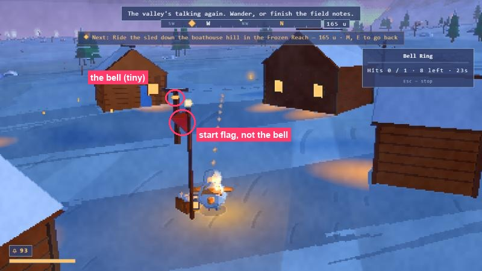
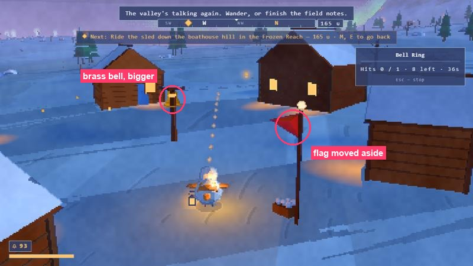
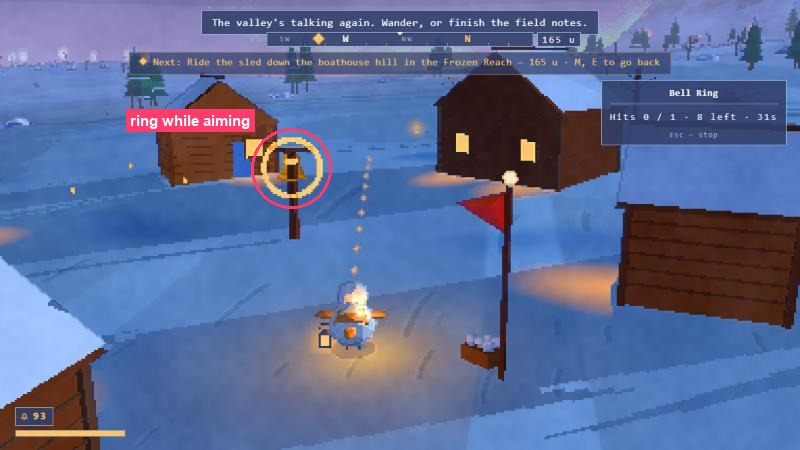
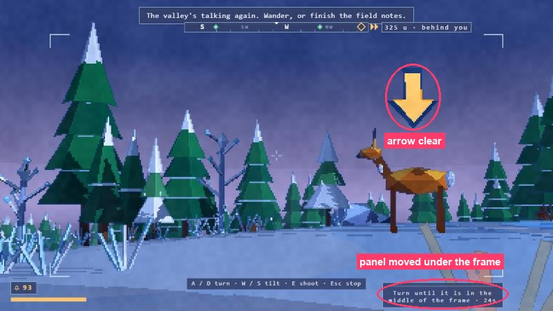
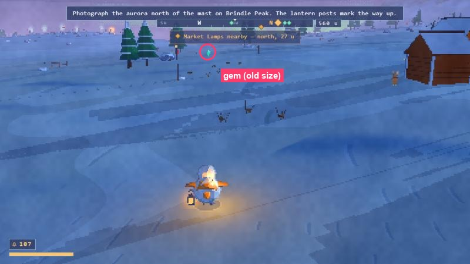
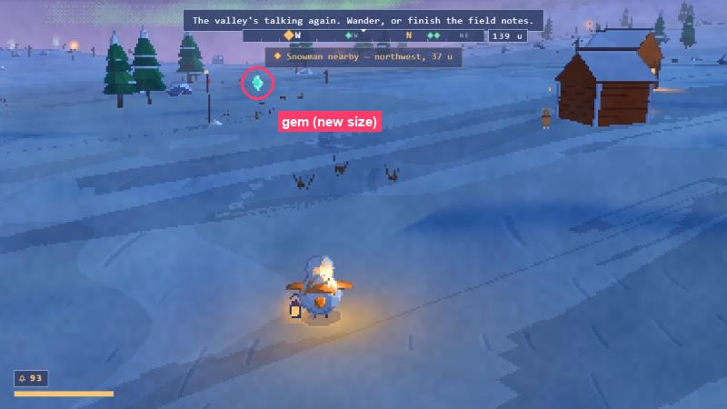
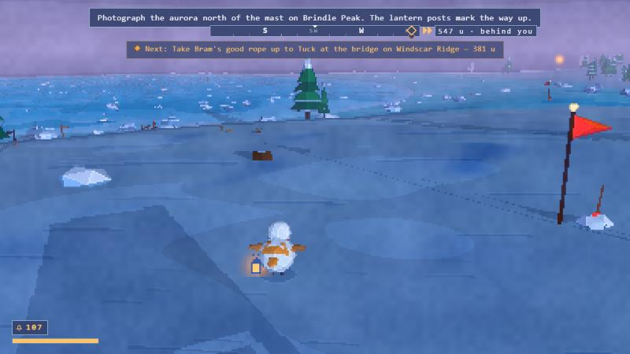
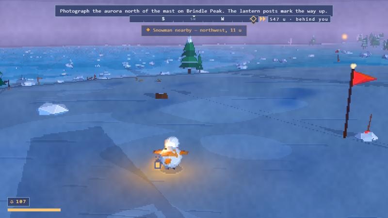

Round 6 look: your answers, acted on
Real captures from the game at 960×540. Pink circles mark where to look. "After" is built into the game; "Proposed" is a live mock running in the game, not built yet. Click any image to enlarge.
Needs your eye
5. The fish you catch
Creek Pool, Pinewind, a graylingYou're right that none of the old shots looked like a fish. That's the problem. When you land one, it hangs from the line beside Pip, but it's built from a stretched diamond and a cone for a tail, in one flat grey. It reads as two loose shapes. (The white ring is the ripple on the water.) The last mock only changed the colours, so it still didn't look like a fish.


6. The bell you throw at
Bell Ring, Hamlet squareCorrection: last time I said the bell was the red shape. It isn't. The red triangle is the Bell Ring's start flag. The bell is the tiny yellow dot under the crossbar at the top of the post, and the flag stands right in front of it.
What Bell Ring is: a throwing game in the square. You turn with A/D (the dotted line shows your throw) and press E to throw a snowball at the bell; one hit rings it. The critic couldn't tell what they were aiming at.



About the ring: it shows only while you're playing Bell Ring, to say "this is the target", and goes away when you stop. Walking round the square, you'd just see the brass bell. The snowman build already uses a lit ring the same way.
Built
1. Activity panel clipping the photo arrow
Hoarfrost Glade photo, PinewindWhile you aim a photo, the panel now sits under the frame's bottom-right corner and shows only the running line. "Esc stop" moved onto the keys line. The frame itself is clear.


3. Bigger green gem over things to do
Hamlet, duskBuilt as you picked: 1.7× the size and brighter.


4. Photo spot's frame post hidden while shooting
Aurora photo, Brindle PeakBuilt for every photo spot. The post comes back as soon as the photo closes. (The panel has also moved out of the frame, from item 1.)


Closed
2. Pip's lantern glow
You're right: the proposal looked the same as the current glow at normal distance. The face hotspot it was meant to fix doesn't show from the usual camera angle either, so I've dropped it. The glow stays as built.


7. Windscar Ridge face
Left as is.